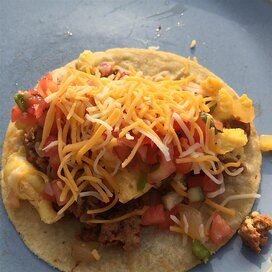

Tacos recipe

Description
An awesome Mexican food.
Ingredients
- 6 ounces of chorizo sausage
- 8(6 inches) corn tortillas
- 6 eggs
- 1/4 cup of milk
- 1/2 teaspoon
- 1 cup shredded monterey jack cheese
- 1 dash hot pepper sauce (e.g. Tabasco™), or to taste
- 1/2 cup salsa
Steps
-
Crumble the sausage into a skillet over medium-high heat.
Cook and stir until evenly brown. Set aside.
-
Heat one skillet over medium heat, and heat another skillet over high heat.
The skillet over high heat is for warming tortillas.
In a medium bowl, whisk together the eggs, milk, salt and pepper.
Spray the medium heat skillet with some cooking spray, and pour in the eggs.
Cook and stir until almost firm. Add the sausage, and continue cooking and
stirring until firm.
-
Meanwhile, warm tortillas for about 45 seconds per side in the other skillet,
so they are hot and crispy on the edges, but still pliable.
-
Sprinkle a little shredded cheese onto each tortilla while it is still hot.
Top with some of the scrambled egg and sausage, then add hot pepper sauce and
salsa to your liking.